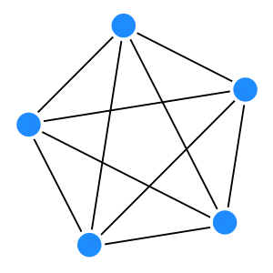

In questo tipo di architettura tutte le macchine svolgono gli stessi ruoli, nel diagramma sopra è rappresentata la situazione in cui ogni processo dialoga con tutti gli altri ma questa ovviamente è una semplificazione: è possibile che un processo parli con uno o più degli altri ma non è necessario che lo faccia sempre con tutti.
Una architettura di questo genere visto il ruolo paritario dei singoli elementi viene chiamata pair to pair e spesso abbreviata in p2p.
In un sistema p2p tutte le entità hanno ruoli paritari e comunicano direttamente tra di loro senza passare per un server centreale.Strutture di questo tipo hanno alcuni vantaggi:
- non essendoci una macchina che deve gestire il tutto è possibile utilizzarne di pià piccole
- il carico di lavoro è distribuito tra i nodi
- il sistema ha una più elevata tolleranza ai guasti
- in genere ha una elevata scalabilità
E ovviamente degli svantaggi:
- la gestione è più complessa
- minor controllo in quanto avendo tutti pari livello non si può intervenire facilmente per fare cambiamenti
Conoscere i pari
In una architettura p2p "pura" ogni client ha il compito di scoprire gli altri "peer": questa cosa potrebbe essere facile da farsi in una piccola rete locale mandando un messaggio in broadcast ma non è affatto ovvia su una rete di grandi dimensioni che viene usata anche per altri scopi oltre al nostro.
Una soluzione per trovare i propri peer è quella dell'uso di un Discovery Server: quando mi connetto chiedo al server (di cui devo conoscere l'ubicazione) chi i miei peer (questa soluzione, con diverse sfumature, è molto utilizzata). Ci si riferisce a queste soluzioni comunque come p2p perché l'architettura di tipo client/server dei discovery viene utilizzata solo in una piccola fase del lavoro.
Esempio di sistemi p2p
Esistono diversi sistemi che usano questo dipo di architetture per scopi anche moto diversi, vediamo 3 esempi in tre diversi ambiti: condivisione di file, database distribuiti e block chain. In tutti questi casi il fatto che un nodo si spenga non implica l'inutilizzabilità del sistema.
BitTorrent
Questo protocollo permette di scaricare un file da più peer in modo da velocizzare di molto il download e non gravare troppo su una singola fonte centrale.
In pratica all'inizio dobbiamo avere un file application/x-bittorrent
(solitamente un file con estensione .torrent)
in cui è specificato uno o più tracker server,in quanti blocchi è diviso il file
e un checksum di ogni blocco (un pezzo) del file. Una volta ottenuto questo file il peer
(un client bitTorrent come μTorrent ad esempio) contatta il tracker server (una specie di discovery)
che gli fornisce un elenco di pari (più sono e più il sistema è veloce e robusto)
che stanno condividendo quel file.
Ottenuto l'elenco dei pari il programma inizia a scaricare blocchi diversi da peer diversi e una volta scaricato il blocco ne verifica l'integrità usando il checksum presente nel file torrent che ha scaricato all'inizio, se la verifica è positiva mette a disposizione dei pari il blocco appena scaricato e va avanti scaricando altri blocchi.
Apache Cassandra️
Cassandra è un database NoSQL distribuito open source ottimizzato per gestire grandi quantità di dati, una sua installazione è formata da più nodi che comunicano tra loro formando un gruppo che gestisce un unico database.La comunicazione tra pari segue un protocollo definito gossip usato anche da altri sistemi come Bitcoin.
Nel caso di Cassandra in fase di installazione su un nodo va impostato in un file di configurazione uno o più nodi con cui all'inizio il processo deve comunicare (nodi seed), questi nodi fornisco informazioni su altri peer e poi la comunicazione procede tra i diversi peer scambiandosi informazioni sullo stato dei nodi.
Bitcoin
Bitcoin è una criptovaluta e un sistema di pagamento che utilizza una architettura p2p per mantenere tutte le informazioni evitando di doversi fidare di un singolo nodo ma affidandosi al consenso della maggioranza.
All'accenzione un nodo non conosce chi sono i suoi pari ma conosce l'indirizzo di uno o più DNS specializzati chiamati "DNS seed" a cui invia una richiesta e in risposta riceve l'indirizzo di uno o più "full node" del sistema di bitcoin a cui poi si connette avviando la comunicazione p2p. Da questo punto in poi ogni nodo completo (ne esistono di altri tipi) contiene l'intera catena di Bitcoin ed è in grado di verificare se le informazioni sono valide, in caso le propaga agli sltri nodi.